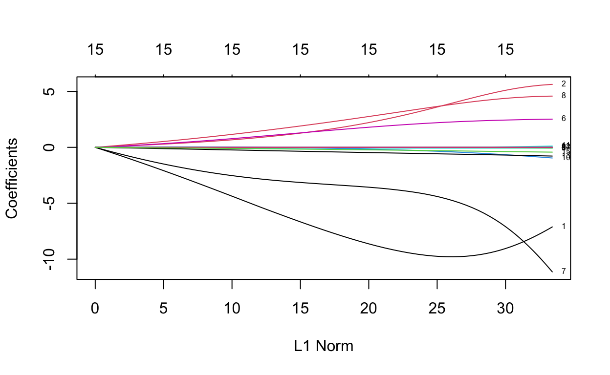
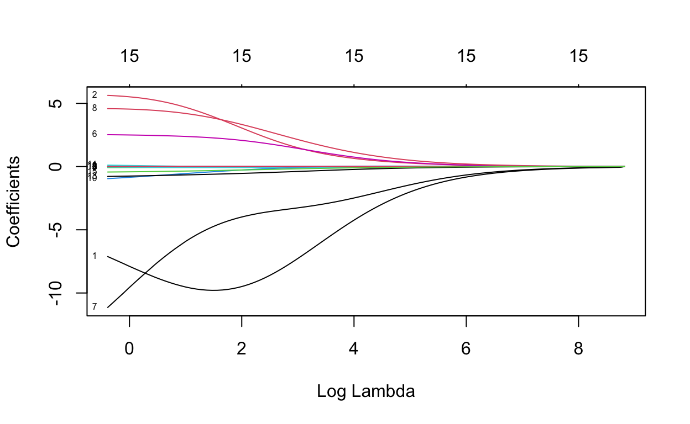
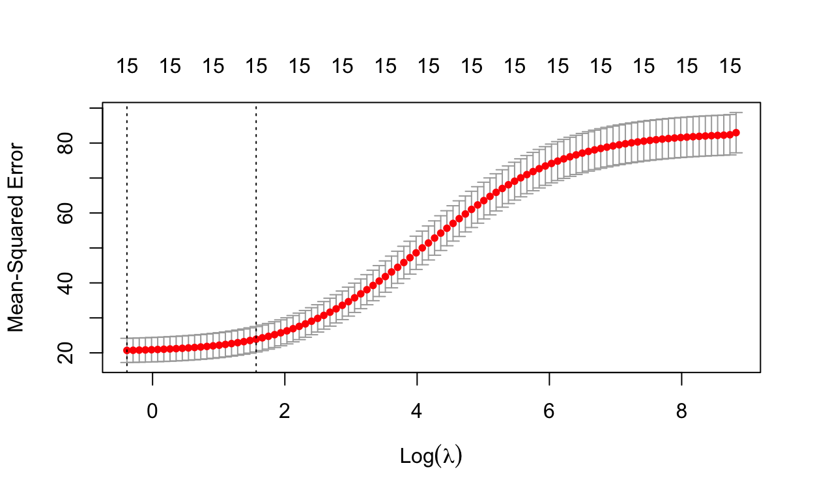
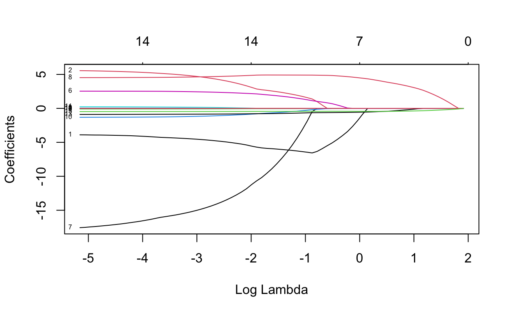
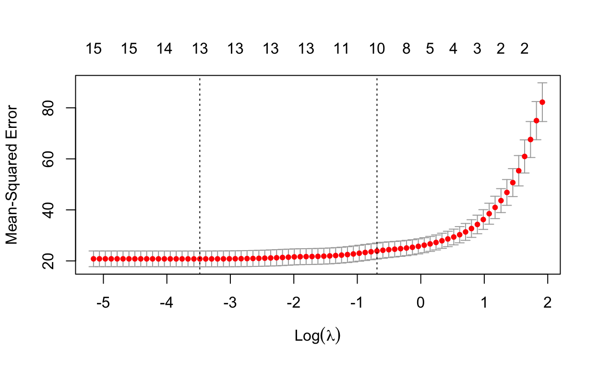
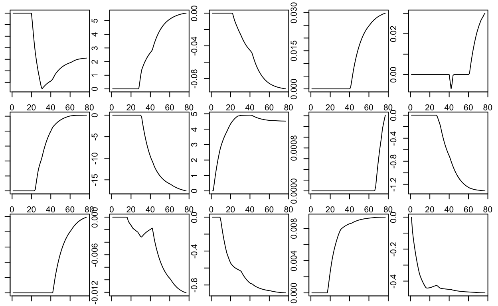

library(learnr)
library(mlbench)
library(glmnet)
library(caret)In this notebook, we use the Boston Housing data set. “This dataset contains information collected by the U.S Census Service concerning housing in the area of Boston Mass. It was obtained from the StatLib archive (http://lib.stat.cmu.edu/datasets/boston), and has been used extensively throughout the literature to benchmark algorithms.”
Source: https://www.cs.toronto.edu/~delve/data/boston/bostonDetail.html
data(BostonHousing2)
head(BostonHousing2)names(BostonHousing2)## [1] "town" "tract" "lon" "lat" "medv" "cmedv" "crim"
## [8] "zn" "indus" "chas" "nox" "rm" "age" "dis"
## [15] "rad" "tax" "ptratio" "b" "lstat"Since we want to compare the performance of some regularized models at the end of the modeling process, we first split the data into a training and a test part. This can be done by random sampling with sample.
set.seed(7345)
train <- sample(1:nrow(BostonHousing2), 0.8*nrow(BostonHousing2))
boston_train <- BostonHousing2[train,]
boston_test <- BostonHousing2[-train,]A quick look on our outcome variable for the next sections, which is the Median value of owner-occupied homes in $1000’s.
summary(boston_train$medv)## Min. 1st Qu. Median Mean 3rd Qu. Max.
## 5.00 16.68 21.15 22.39 25.00 50.00summary(boston_test$medv)## Min. 1st Qu. Median Mean 3rd Qu. Max.
## 8.10 18.27 21.30 23.10 24.60 50.00Now we can prepare our training data for the regularized regression models. The glmnet package needs models to be fitted on an X matrix and an y vector, which we need to generate first.
X <- model.matrix(medv ~ . - town - tract - cmedv,
boston_train)[,-1]
y <- boston_train$medvTo estimate a sequence of regularized models we pass our X and y objects to the glmnet function. Setting alpha to zero equals to fitting ridge regression models. By default, glmnet figures out an appropriate series of lambda values.
m1 <- glmnet(X, y, alpha = 0)
summary(m1)## Length Class Mode
## a0 100 -none- numeric
## beta 1500 dgCMatrix S4
## df 100 -none- numeric
## dim 2 -none- numeric
## lambda 100 -none- numeric
## dev.ratio 100 -none- numeric
## nulldev 1 -none- numeric
## npasses 1 -none- numeric
## jerr 1 -none- numeric
## offset 1 -none- logical
## call 4 -none- call
## nobs 1 -none- numericLet’s see how we can access the results from glmnet…
m1$lambda[1]## [1] 6786.868m1$lambda[100]## [1] 0.6786868m1$beta[,1]## lon lat crim zn indus
## -4.020939e-35 5.403539e-36 -3.966429e-37 1.277130e-37 -6.502897e-37
## chas1 nox rm age dis
## 5.692271e-36 -3.460459e-35 9.758455e-36 -1.139123e-37 1.043789e-36
## rad tax ptratio b lstat
## -4.394547e-37 -2.692880e-38 -2.287723e-36 3.387063e-38 -9.679396e-37m1$beta[,ncol(m1$beta)]## lon lat crim zn indus
## -7.119230e+00 5.630628e+00 -7.805586e-02 1.757537e-02 -3.410124e-02
## chas1 nox rm age dis
## 2.522942e+00 -1.113983e+01 4.582983e+00 2.521612e-04 -9.527755e-01
## rad tax ptratio b lstat
## 1.145021e-01 -6.469498e-03 -7.805410e-01 9.424970e-03 -4.298141e-01A nice feature of glmnet is that we can easily plot the coefficient paths by simply calling plot in connection with our results object.
plot(m1, label=T)
plot(m1, label=T, xvar = "lambda")
However, at this point we do not know which lambda leads to the best model. Defining “best” in terms of prediction performance for new data, Cross-Validation can be used for this task.
m1_cv <- cv.glmnet(X, y, alpha = 0)
plot(m1_cv)
On this basis, we can now have a look at the models that perform best in terms of the smallest CV error and with respect to the 1-SE rule. We also store the value of lambda that corresponds to the smallest CV error for later usage.
coef(m1_cv, s = "lambda.min")## 16 x 1 sparse Matrix of class "dgCMatrix"
## s1
## (Intercept) -7.220382e+02
## lon -7.119230e+00
## lat 5.630628e+00
## crim -7.805586e-02
## zn 1.757537e-02
## indus -3.410124e-02
## chas1 2.522942e+00
## nox -1.113983e+01
## rm 4.582983e+00
## age 2.521612e-04
## dis -9.527755e-01
## rad 1.145021e-01
## tax -6.469498e-03
## ptratio -7.805410e-01
## b 9.424970e-03
## lstat -4.298141e-01coef(m1_cv, s = "lambda.1se")## 16 x 1 sparse Matrix of class "dgCMatrix"
## s1
## (Intercept) -8.395291e+02
## lon -9.785792e+00
## lat 3.822215e+00
## crim -6.305208e-02
## zn 9.039331e-03
## indus -7.245898e-02
## chas1 2.246159e+00
## nox -4.606355e+00
## rm 3.773434e+00
## age -3.140575e-03
## dis -3.870609e-01
## rad -8.737158e-04
## tax -3.571737e-03
## ptratio -5.946402e-01
## b 7.701702e-03
## lstat -3.083477e-01bestlam1 <- m1_cv$lambda.min
bestlam1## [1] 0.6786868To estimate a Lasso sequence, we simply call glmnet again and set alpha to one.
m2 <- glmnet(X, y, alpha = 1)Here we want to display the first, last and one in-between model of our model series. We see that coefficients are eventually shrunken exactly to zero as the penalty on model complexity increases.
m2$lambda[1]## [1] 6.786868m2$lambda[(ncol(m2$beta)/2)]## [1] 0.21713m2$lambda[ncol(m2$beta)]## [1] 0.005767164m2$beta[,1]## lon lat crim zn indus chas1 nox rm age dis
## 0 0 0 0 0 0 0 0 0 0
## rad tax ptratio b lstat
## 0 0 0 0 0m2$beta[,(ncol(m2$beta)/2)]## lon lat crim zn indus chas1
## -5.992391834 2.458763714 -0.042629046 0.000000000 0.000000000 1.862330983
## nox rm age dis rad tax
## -8.160857562 4.909346699 0.000000000 -0.625030143 0.000000000 -0.002154534
## ptratio b lstat
## -0.756126834 0.008461913 -0.450541237m2$beta[,ncol(m2$beta)]## lon lat crim zn indus
## -3.895371177 5.553192898 -0.092616460 0.029792679 0.030094273
## chas1 nox rm age dis
## 2.535798274 -17.562578330 4.524820661 0.001411861 -1.313856327
## rad tax ptratio b lstat
## 0.247956800 -0.012090046 -0.892933311 0.009390218 -0.473572510This also becomes clear when plotting the coefficient paths.
plot(m2, label=T, xvar = "lambda")
When using Cross-Validation with Lasso, we see that a full model with all features may not lead to the best model in terms of prediction performance.
m2_cv <- cv.glmnet(X, y, alpha = 1)
plot(m2_cv)
Again, we may have a look at the model with the smallest CV error and store the corresponding lambda.
coef(m2_cv, s = "lambda.min")## 16 x 1 sparse Matrix of class "dgCMatrix"
## s1
## (Intercept) -4.936314e+02
## lon -4.329729e+00
## lat 5.055108e+00
## crim -8.510542e-02
## zn 2.427637e-02
## indus .
## chas1 2.498280e+00
## nox -1.581410e+01
## rm 4.579455e+00
## age .
## dis -1.242942e+00
## rad 1.958975e-01
## tax -9.592031e-03
## ptratio -8.649702e-01
## b 9.246831e-03
## lstat -4.676025e-01bestlam2 <- m2_cv$lambda.minFinally, we investigate the performance of our models in the test set. For this task, we construct an X matrix from the test set.
Xt <- model.matrix(medv ~ . - town - tract - cmedv,
boston_test)[,-1]This matrix can be used in the predict function, along with the respective model that should be used for prediction. We try out our best ridge, lasso and elastic net model. One can also add a “null model” with a huge penalty for comparison purposes.
p_ridge <- predict(m1, s = bestlam1, newx = Xt)
p_lasso <- predict(m2, s = bestlam2, newx = Xt)
p_null <- predict(m2, s = 1e10, newx = Xt)As a last step, let’s look at the test MSE of our models.
mean((p_null - boston_test$medv)^2)## [1] 93.03412mean((p_ridge - boston_test$medv)^2)## [1] 37.62915mean((p_lasso - boston_test$medv)^2)## [1] 37.0057We can also plot the coefficient paths separately to get a more detailed picture. Here we use the Lasso results and extract the coefficients using as.matrix.
coefs <- as.matrix(m2$beta)Now we can plot the coefficient path over the range of lambdas for each variable by looping over the rows of the coefs object.
par(mfrow=c(3,5), mar=c(1,1,1,1))
for (i in 1:nrow(coefs))
plot(coefs[i,], type = "l")
Another approach for selecting features is (simple) feature screening via filtering. In this context it is important to be cautious when estimating predicting performance and correctly combine filtering and CV. The caret can be used to take care of that. First, we have to set up our inner (trainControl) and outer (sbfControl) evaluation techniques.
sbf_ctrl <- sbfControl(functions = caretSBF,
method = "cv",
number = 10)
ctrl <- trainControl(method = "none")Now we can run CV with feature selection by filter via sbf.
m3 <- sbf(medv ~ . - town - tract - cmedv,
data = boston_train,
method = 'lm',
sbfControl = sbf_ctrl,
trControl = ctrl)The corresponding results object gives us an estimate of prediction performance and information on the selected features.
m3##
## Selection By Filter
##
## Outer resampling method: Cross-Validated (10 fold)
##
## Resampling performance:
##
## RMSE Rsquared MAE RMSESD RsquaredSD MAESD
## 4.436 0.7739 3.167 1.088 0.06507 0.5724
##
## Using the training set, 14 variables were selected:
## lon, crim, zn, indus, chas1...
##
## During resampling, the top 5 selected variables (out of a possible 14):
## age (100%), b (100%), chas1 (100%), crim (100%), dis (100%)
##
## On average, 14 variables were selected (min = 14, max = 14)We can also use this object to apply the final model (fitted on the full training set) to the test set and calculate the test MSE.
p_filter <- predict(m3, newdata = boston_test)
mean((p_filter - boston_test$medv)^2)## [1] 36.76964